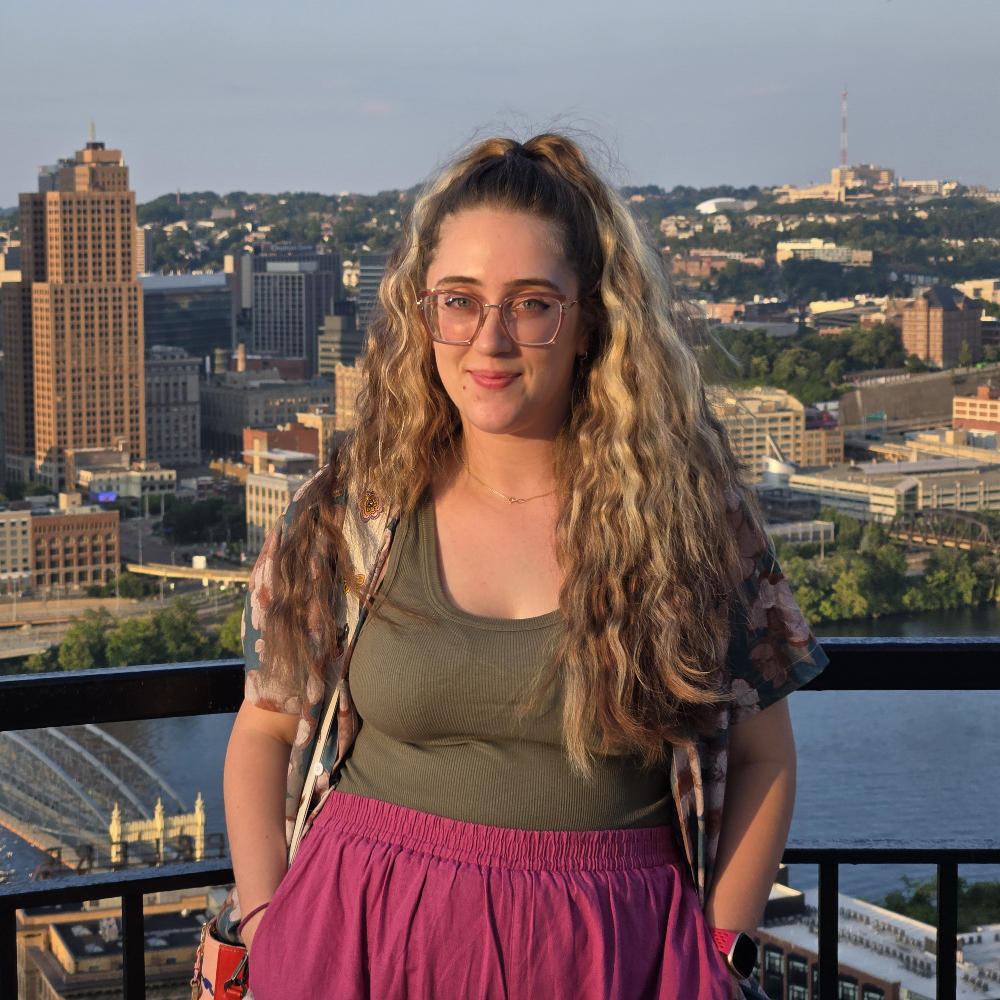

New York University
Doctor of Philosophy in Mathematics

University of Pittsburgh
Bachelor of Philosophy in Mathematics and Physics
Mariya Savinov |
|
||||
|  | Postdoctoral Fellow
at NSF-Simons National
Institute for Theory and Mathematics in Biology Chicago Fellow of UChicago Biological Sciences Division e-mail: savinov [at] uchicago [dot] edu |
About Me
I am currently a
postdoctoral fellow at the NSF-Simons National Institute
for Theory and Mathematics in Biology, jointly as a
Chicago Fellow of the University of Chicago Biological
Sciences Division. In my postdoc, I aim to develop new
mathematical modeling approaches to investigate the
underlying principles of adaptive collective dynamics
of multicellular systems. Using data-driven biophysical
modeling, I seek to generate experimentally testable
predictions to explore in collaboration with the Munro Lab, Nirody Lab,
and others. |
Education |
| 2020 - 2025 New York University Doctor of Philosophy in Mathematics |
|
|
2016 - 2020 University of Pittsburgh Bachelor of Philosophy in Mathematics and Physics |
Outreach
I believe it
is crucial that we work hard to
make mathematics more inclusive,
supportive, and welcoming to
individuals who have been
historically marginalized in the
mathematical sciences. In
pursuit of this, during my PhD I
co-organized the Courant
DEI
Reading
Group
as well as
led the effort
to generate an
internal
survey
to assess the
concerns and
satisfaction
of PhD
students in
the
department. In
addition, I
have
participated
as a lecturer
for cSplash,
the Courant
annual
math-outreach
lecture series
for
high-schoolers,
and a speaker
at
Northeastern
Illinois
University's Mathematical
and
Statistical
Modeling of
Complex
Systems
Workshop
for
undergraduates
in mathematics
and economics.
I am committed
to continue my
efforts in
promoting
diversity,
equity, and
inclusion
through
mentorship and
volunteering
in the
surrounding
community. |